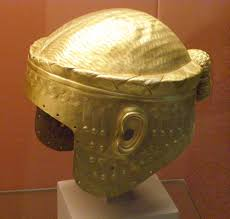
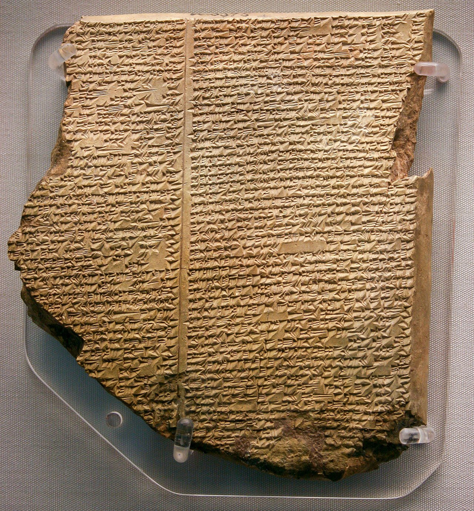
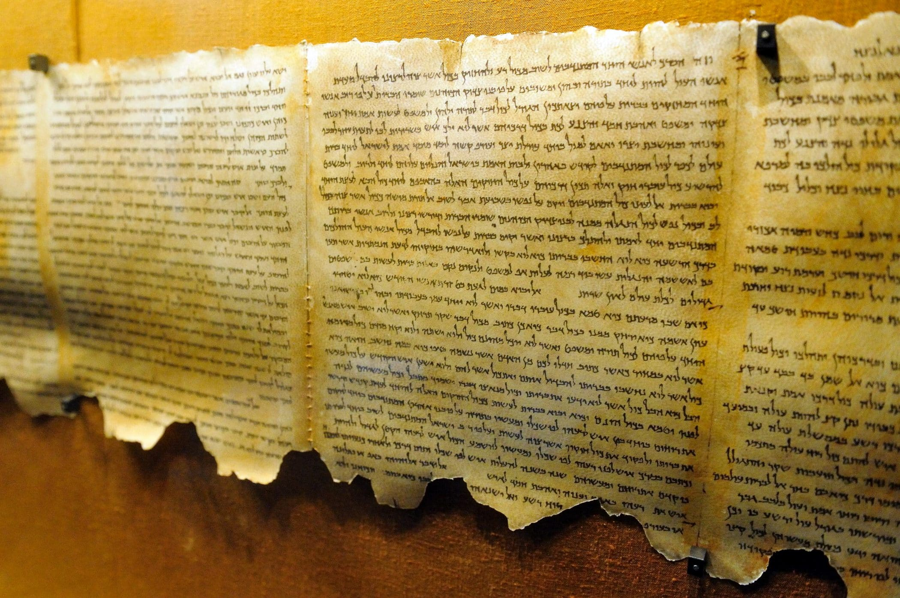

Seção ISobre o Acervo
Este acervo reúne artefatos de civilizações que a historiografia oficial mal reconhece. Cada peça foi obtida em escavações clandestinas legalizadas, leilões secretos e expedições financiadas por recursos sem limites. O objetivo não é apenas possuir — é preservar o que o mundo quase perdeu.
A coleção abrange objetos de mais de 17 culturas extintas, com datações que variam de 12.000 a.C. até o século XV. Cada peça é acompanhada de laudo arqueológico, análise por carbono-14 e, em casos especiais, registros de testemunhos orais de povos descendentes.
"Um artefato não é apenas um objeto. É uma mensagem de alguém que viveu, amou e morreu — e decidiu deixar algo para trás." — Howard Carter, arqueólogo, 1922
Seção IIPeças em Destaque

Capacete de Ouro de Meskalamdug
Capacete funerário em ouro maciço descoberto nas Tumbas Reais de Ur, no atual Iraque. Pertenceu ao príncipe Meskalamdug e é um dos artefatos em ouro mais refinados da Mesopotâmia antiga.

Tábua do Dilúvio de Nínive
Tábua de argila cuneiforme descoberta nas ruínas da biblioteca de Assurbanipal, em Nínive. Contém a versão mais antiga conhecida da história do dilúvio, anterior ao relato bíblico, parte da Epopeia de Gilgamesh.

Pergaminhos do Mar Morto
Manuscritos bíblicos descobertos em 1947 nas cavernas de Qumran, em Israel. São os textos mais antigos do Antigo Testamento já encontrados, escritos em hebraico, aramaico e grego, com mais de 2.000 anos de história.
Seção IIIInventário Completo
Abaixo está o registro formal de todas as peças catalogadas no acervo, com sua origem, período, material e classificação de raridade.
| # | Nome da Peça | Civilização | Período | Material | Raridade |
|---|---|---|---|---|---|
| 001 | Capacete de Ouro de Meskalamdug | Suméria | ~2.500 a.C. | Ouro maciço | Lendário |
| 002 | Tábua do Dilúvio de Nínive | Assíria | ~700 a.C. | Argila cuneiforme | Único |
| 003 | Pergaminhos do Mar Morto | Israel | 300 a.C. – 70 d.C. | Pergaminho e papiro | Lendário |
| 004 | Amuleto da Serpente Dupla | Civilização do Indo | 2.500 a.C. | Turquesa e prata | Raro |
| 005 | Esfera de Cristal de Mu | Lemúria (hipotética) | Indeterminado | Quartzo hialino | Lendário |
| 006 | Frasco de Lágrimas de Ísis | Egito Pré-Dinástico | 3.500 a.C. | Alabastro e obsidiana | Único |
| 007 | Bastão do Oráculo de Delfos | Grécia Arcaica | 800 a.C. | Madeira de loureiro e bronze | Raro |
Seção IVRegras e Princípios do Colecionador
Princípios Invioláveis
- Nenhuma peça pode ser adquirida se isso causar dano ao povo de origem.
- Toda peça deve ter proveniência documentada e auditável.
- O acervo é aberto a pesquisadores credenciados mediante agendamento.
- Peças únicas jamais poderão ser vendidas — apenas emprestadas a museus.
- A coleção deve ser doada a uma instituição pública após o falecimento do colecionador.
Processo de Aquisição
- Identificação da peça e verificação de autenticidade preliminar.
- Laudo arqueológico por laboratório independente.
- Consulta a comunidades descendentes da civilização de origem.
- Análise jurídica de propriedade e direito internacional.
- Negociação e aquisição formal com contrato notariado.
- Registro no inventário e inserção no sistema de conservação.
Seção VFontes e Referências
Para saber mais sobre as civilizações representadas neste acervo, consulte as fontes abaixo: